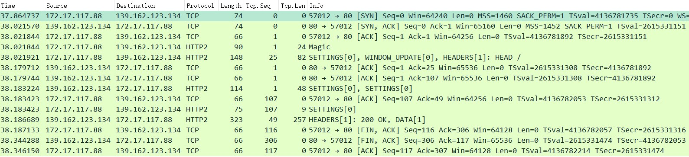

http2协议
参考文章
HTTP Frame {
Length (24), // Frame Payload length
Type (8), // 0~9依次是DATA/HEADERS/PRIORITY/RST_STREAM/SETTINGS/PUSH_PROMISE/PING/GOAWAY/WINDOW_UPDATE/CONTINUATION
Flags (8), // stream类型不同代表的含义也不同
Reserved (1), // Reserved
Stream Identifier (31), // Stream Id
Frame Payload (..), // Frame Payload
}
网络抓包
// 发起不带tls的http2请求，用wireshark抓包如下图
curl --http2-prior-knowledge -I "http://nghttp2.org"
1. 客户端先发了2个包（共4个Frame），服务端响应2个ack：
Stream: Magic, PRI * HTTP/2.0\r\n\r\nSM\r\n\r\n（固定24字节）
Stream: SETTINGS, Stream ID: 0, Length 18
Stream: WINDOW_UPDATE, Stream ID: 0, Length 4
Stream: HEADERS, Stream ID: 1, Length 33, HEAD /
2. 服务端发了2个包（共4个Frame），客户端响应2个ack
Stream: SETTINGS, Stream ID: 0, Length 30
Stream: SETTINGS, Stream ID: 0, Length 0
Stream: HEADERS, Stream ID: 1, Length 239, 200 OK
Stream: DATA, Stream ID: 1, Length 0
